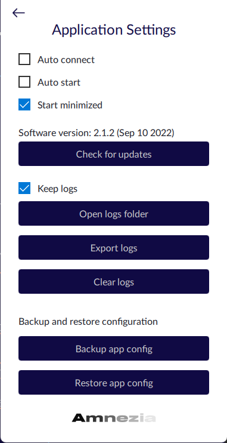
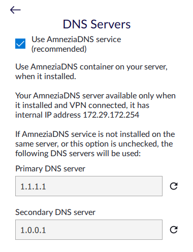
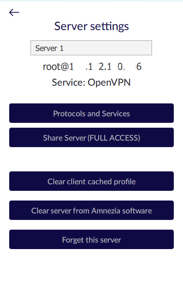
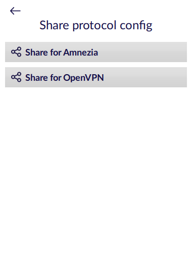
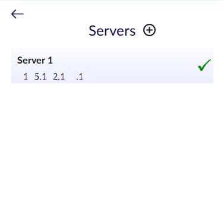
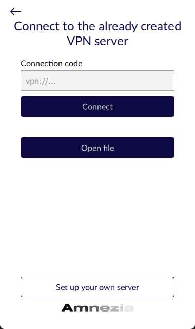
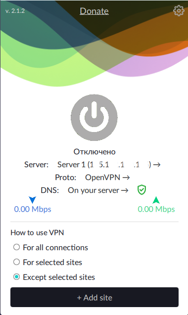
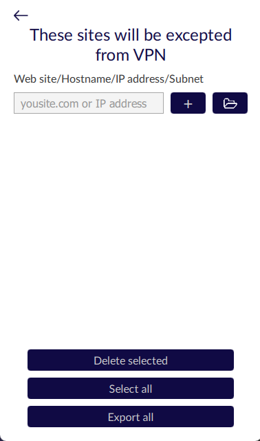

Application interface description
EnglishEn

App setting

“Auto connect” - automatically connects upon opening the application.
“Auto start” -
automatically starts the application when the device is started.
“Start minimised” - automatically opens the application in a minimized state when the device is started.
“Check for updates” -
checks for updates. Leads to opening a link to GitHub with the latest releases. The version of the application and the release date of that version are displayed above the button.
“Keep logs” - enables logging within the application.
“Open logs folder” - opens the folder containing the logs. Leads to opening the folder on the device where the client logs are saved if logging is enabled.
“Export logs” - shares the log file. Uploads a file with logs.
“Clear logs” - clears the log file.
“Back up app config” - creates a backup for restoring the application configuration.
“Restore app config” - restores a saved configuration from a file.
Network settings

“Use AmneziaDNS service” -
enables/disables the use of the installed DNS container.
“Primary/Secondary DNS server” - changes the DNS addresses.
Server Settings

“Protocols and services” - leads to a screen with all available and installed containers, where you can:
- Manually switch between protocols (checkmark next to the protocol).
- Remove installed containers (click on the container name, then click on the cross icon).
- Reconfigure installed containers (click on the container name, then click on the gear icon).
- Install new containers (click on "Install new protocols container").
“Share server(Full access)” - leads to a new screen that allows you to generate a configuration for a user with full access to server settings (client cache).
“Clear server from Amnezia software” - clears servers from all containers installed by the client.
“Forget this server” - deletes data about the server.
Share VPN connection
“Share connection” - makes it possible to generate the configuration of the current protocol and share it with another user:

“Share for Amnezia” - leads to the next window with the "Generate Config" button.
Clicking on “Generate Config” - generates a configuration that can be shared with another user by copying the
connection code as a file or QR code. The user with whom the configuration is shared can open it using Amnezia,
as this configuration is not compatible with third-party applications.
“Share for Wireguard/OpenVPN/etc” - leads to the next window with the
“Generate Config”, button. Clicking on "Generate Config"
generates a configuration that can be shared with another user by copying the connection code. It can be saved as a file or as a QR code. The user with whom the configuration is shared can open it using third-party applications such as Wireguard or OpenVPN.
Servers
“Servers” - application settings section. It allows you to add a new server, reconfigure or delete an existing one, switch between servers:

“Add” button (plus icon in a circle) - leads to the screen for adding a new server/connection using a connection code, file or manual server data entry.
The tick icon next to the server indicates the activity of the server. If several servers are installed, then by clicking on the icon, you can switch between servers.
“Gear icon” - displayed when you hover over the server. Clicking on the icon takes you to the “Server Settings” screen
Add Server

Connecting to an already configured server
using the Connection Code:
В строку “Connection code” - enter the
connection code in the format vpn://...
Connecting to an already configured server
using a file:
“Open file” - the application opens browser files, where you can select the desired .config
“Set up your own server” - opens a screen for connecting to the server using the data: login, IP address, password or ssh key.
Main screen

Main screen - appears after connecting to the server:
“Server” - leads to the "Servers" screen.
“Proto” - leads to the screen with
information about installed containers,
where you can also switch between already installed containers, delete a container, or install a new one.
“DNS” - leads to the "Network Settings" screen and "How to use VPN" instructions.
“For all connections” - use VPN for all websites and applications.
“For selected sites” - use VPN only for sites/domains specified in the list.
“Except selected sites” - use VPN for all connections except those specified in the list
When selecting “For selected sites” or “Except selected sites” the “+ Add site” button becomes active. Clicking on it leads to the screen for configuring this functionality.

The “+” button - adds the website specified in the left field to the list for "For selected sites" or "Except selected sites".
“Folder icon” - for uploading a file
with a list
for "For selected sites" or "Except selected sites"
“Delete Selected” - removes a website from the list: click on the site in the list and then click the "Delete Selected" button.
“Select all” - clicking the button selects all the specified sites in the list.
“Export all” - exports the list of websites from the client to the device.
Ready!